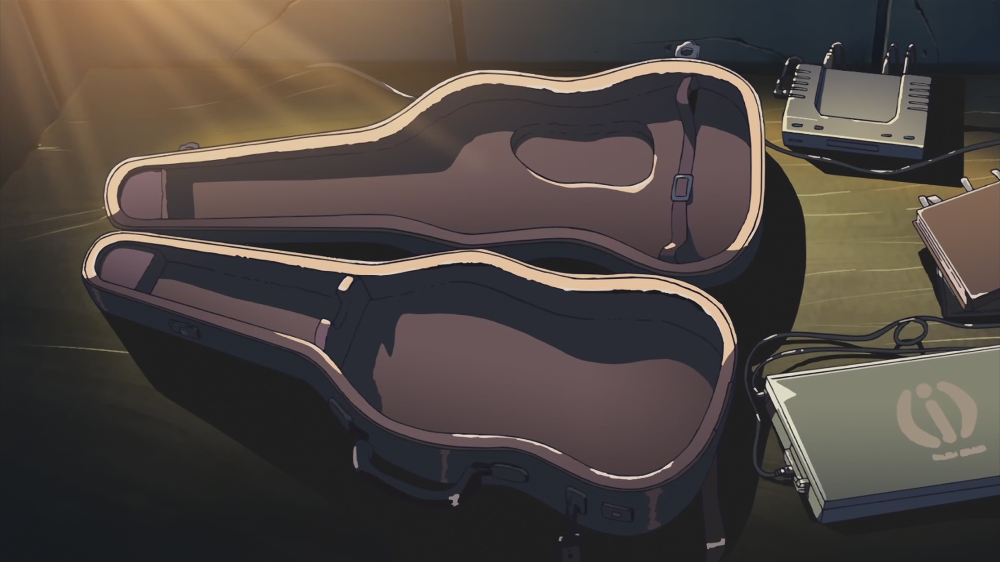

WELCOME TO MY SECRET LAIR
Life is a river. That's what grandad always used to say. A beginning, an end, a million different ways in between.


When it comes to music, when the builder puts down the shovel and picks up the guitar, when creation overrides destruction... well, that's living.
Learn MoreLife is a river. That's what grandad always used to say. A beginning, an end, a million different ways in between.
One of the coolest, most useful features is that you can copy and paste tab from any site. You dont even have to worry about non-tab portions getting mixed in as tabnplay filters it all out. This feature worked well when I tried it. I opened a tab on ultimate guitar, hit command-A to select all, even the ads, and pasted into tabnplay with only the tab pasting in.
ir lielākā latviešu dziesmu vārdu un ģitāras akordu un tabu krātuve Internetā. Viss šeit atrodamais saturs izvietots tikai izglītošanās nolūkā. Liela daļa lapā atrodamo dziesmu ir lietotāju interpretācijas un var precīzi nesakrist ar oriģinālu.
Songsterr is an archive of guitar, bass and drum tabs. It is collaboratively built and maintained by your fellow music lovers. Anyone with Internet access can contribute new tabs and make changes to existing ones. Much like Wikipedia, contributions cannot damage Songsterr because the software allows easy reversal of mistakes and experienced editors are watching to help and ensure that edits are cumulative improvements. To the rush of moving forward.